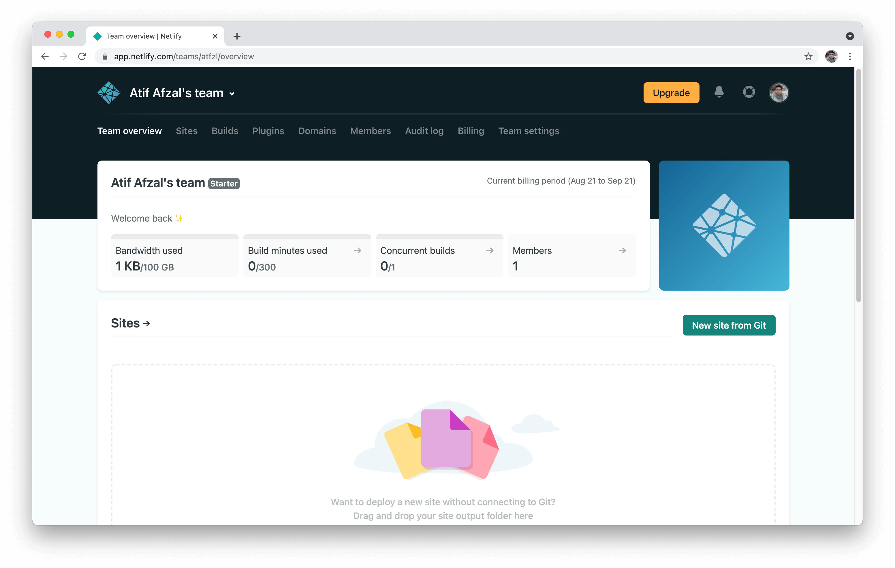
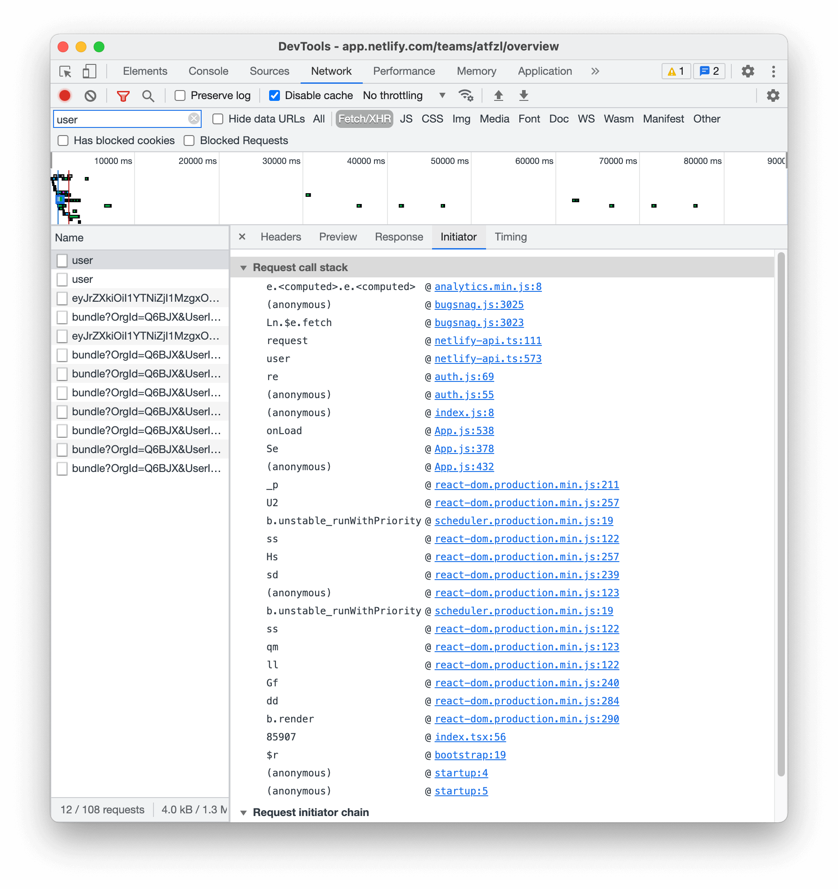
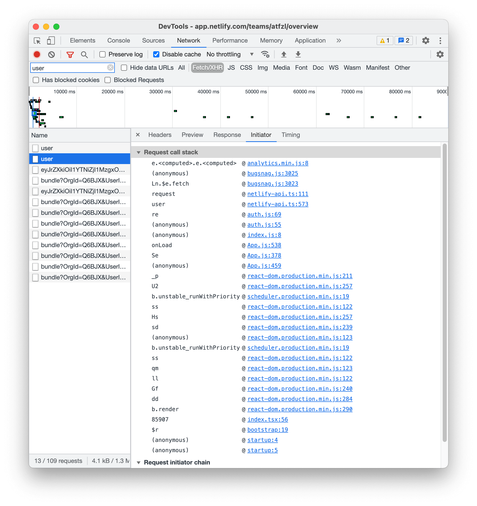

Optimizing Netlify
We’ll optimize Netlify’s Single Page web application load time.
Log in to https://netlify.com.
You’ll be redirected to https://app.netlify.com after logging in. This is the SPA we’ll be optimizing.

Open Chrome DevTools (cmd + options + i)
Select Performance Panel\
Make sure Screenshot option selected (useful to check when app was loaded)

Start recording and refresh the page. Stop the recording when the page has loaded. We have the DevTools open in detached mode to view the timeline.

On closer look in the network section, it looks like the network call api.netlify.com/api/v1/user is duplicated. api.segment.io/v1/p is also duplicated but that doesn’t look much interesting.

We go to the Network panel of DevTools to check the details about this user api.

Now we check the call stack for both these calls.


Both call stack look pretty similar with one difference.
- App.js:432
+ App.js:459
Different lines in the same file:
We’re lucky Netlify has source-maps enabled in public, otherwise we’d see minified code.
The first useEffect is meant to run when the app loads for first time, at this time userId is not defined.
The second useEffect is running again when userId is not defined. It should be:
useEffect(() => {
if (userId) {
load(props);
}
}, [userId]);
This will fix the api call being made twice.
Now back to the timeline, I see an opportunity for improving the app load time.

Looks like the main thread is not doing much while the network calls are being made. The current process is in series: the JavaScript runs and this code makes some network calls. We can do these in parallel because the network calls are handled by browser in a separate thread.
To do this we’d normally need the source to build the code but we’ll be using Chrome Local Overrides.
I have the main html file overview and main js file app.bundle.js overridden with my local copy.

I found a place where I’ll short-circuit the api call for user:

Updating this to
user() {
return window.userPromise || this.request('/user');
}
Now we’ll define window.userPromise in the main HTML file because we want this api call made ASAP. We’ll add a new <script> tag and add our /user api call with the correct access token from the local storage.

And it works, we now have an api call at the start of page, in parallel as the main JavaScript code runs.
But there are 2 more network calls which are blocking the app render, let’s optimize them in the same way.

We now have a busy main thread, networks calls and JavaScript code are being run in parallel.

For my system and network, I could see around 40% reduction in app load time from 2000ms to 1200ms.
This is a common scenario in SPA using bundling systems like Webpack, API calls are made after the code is run. Early API calls is a simple method to improve app load time for a lot of web apps.